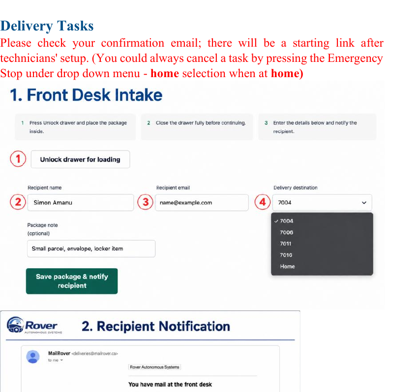
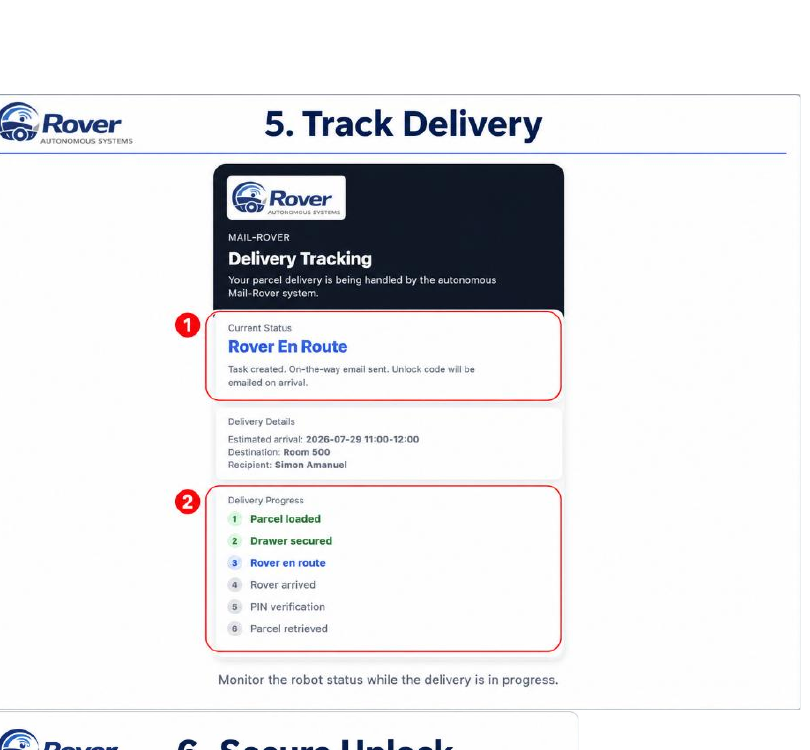
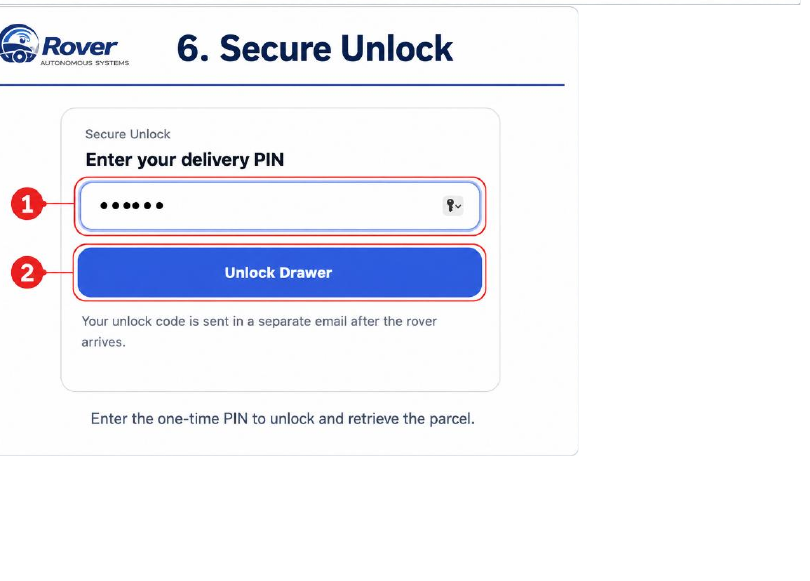
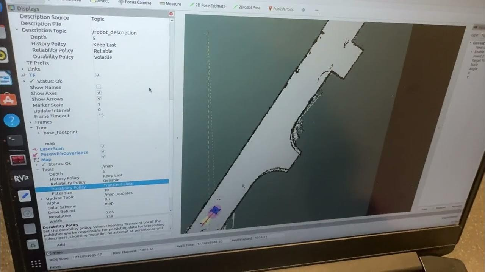
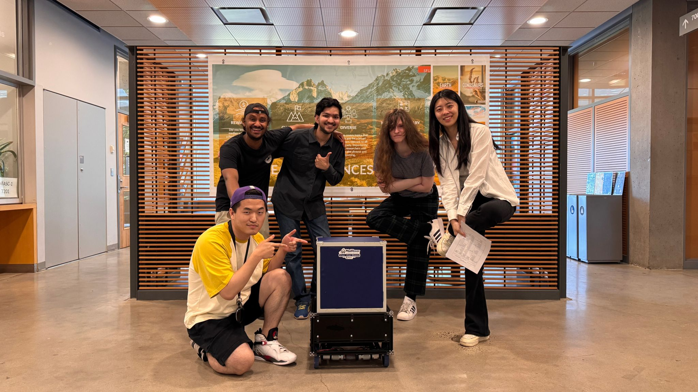

Web Application
Built the staff and recipient interfaces for creating deliveries, tracking progress and retrieving parcels.
An autonomous indoor robot built to move a secured parcel from a front desk to a recipient without manual driving.

Staff could register and dispatch a parcel through the web interface. The robot then navigated to a predefined destination, responded to obstacles, and kept the parcel locked until the recipient entered the correct PIN.
My work connected the user workflow to navigation, low-voltage electrical subsystems and real hardware.
Built the staff and recipient interfaces for creating deliveries, tracking progress and retrieving parcels.
Connected delivery requests from the web application to ROS 2 navigation tasks on the robot.
Implemented the control path from successful PIN verification to Raspberry Pi GPIO and the electronic parcel lock.
Integrated and debugged the full workflow across software, navigation and hardware before final verification.
I contributed to the robot’s low-voltage electrical integration: connecting the battery-powered subsystems, wiring the Raspberry Pi, motor controller, sensors and locker electronics, and debugging power delivery as the complete system came together.
The interface made the engineering system usable by staff and recipients without exposing the underlying robot software.



Testing focused on whether the complete delivery experience worked from dispatch through secure retrieval.
Reached predefined destinations without manual steering.
Detected unexpected obstacles and reacted before contact.
Kept the locker secured until successful PIN verification.
Web interface, navigation and locker control worked together in the final demonstration.
This sequence shows both sides of the project’s development: how the robot learned to move and understand its surroundings, and how the physical build became a complete delivery system.
The final end-to-end demonstration of the finished robot, autonomous navigation, browser interface and secure-delivery workflow working together.
Open Final Demo Video ↗ The video is stored inside the portfolio and may take a moment to begin.After the final demonstration, these milestones show the earlier work in chronological order. YouTube clips open directly on YouTube to avoid local-player errors.
▶ Watch on YouTube ↗
The earlier YouTube clip shows how the robot first drove and what the initial physical prototype looked like.
▶ Open mobility clip ↗
A more successful mobility run before mapping, delivery software and parcel security were fully integrated.

▶ Watch mapping clip ↗An early navigation milestone showing the robot building and updating its environment map in real time—not the full system demo.
The earlier build established the mobile platform. The completed enclosure and integrated system turned it into a recognizable parcel-delivery robot.

MailRover brought together navigation, software, electronics, mechanical design and system testing into one working prototype.